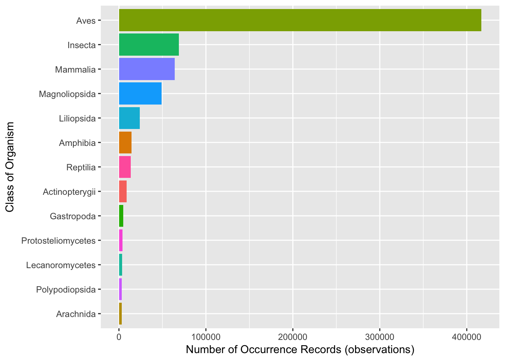
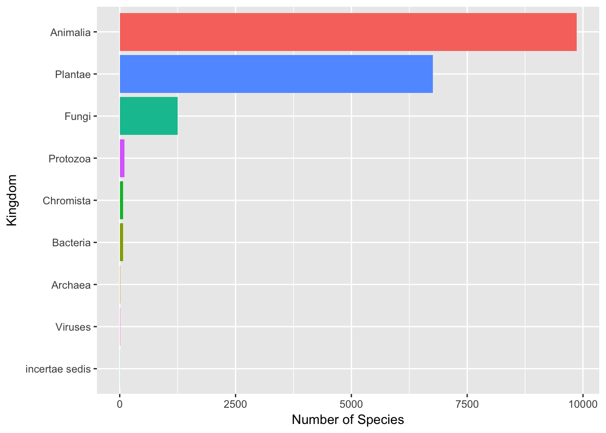
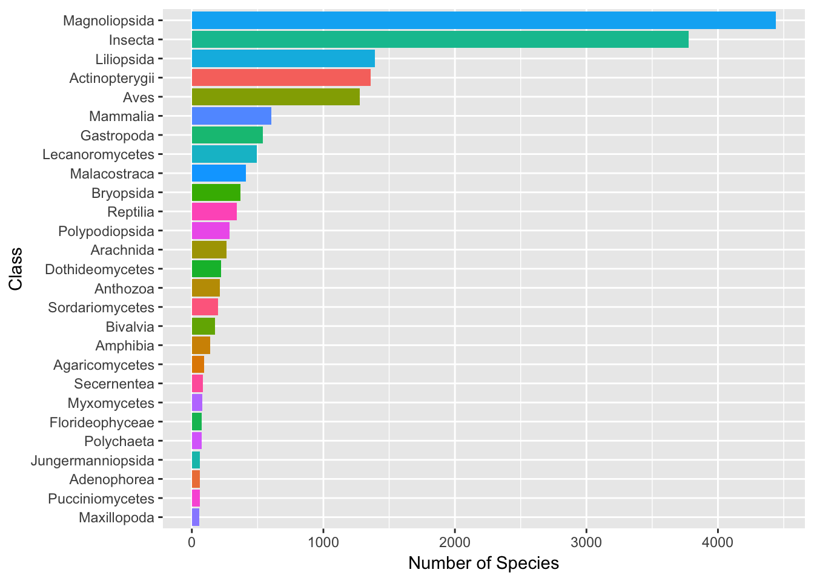

Accessing the Global Biodiversity Information Facility with rgbif
Paul Oldham
Introduction
In this article we will look at how to obtain taxonomic and geographic occurrence data from the Global Biodiversity Information Facility (GBIF). Our purpose is to use GBIF data as part of a wider model for monitoring access and benefit-sharing (ABS) under the Nagoya Protocol. You can read about the wider model here. However, our focus in this article will be on the basics of accessing and working with GBIF data.
One of the challenges in monitoring biodiversity in general is gaining data on the species that are known to exist within a country. GBIF plays a key role in providing access to taxonomic data about a country and can easily be downloaded using either the GBIF website or using the API and packages such as rgbif from rOpenSci in R with RStudio.
In this walk through we will focus on downloading and processing GBIF records to do three things:
- Generate quick summaries of the available data about species within a country.
- Create a species name list that can be used for searching and text mining with other databases as part of ABS monitoring.
- Create a species occurrence table with latitude and longitude coordinates for use in the creation of interactive maps.
This walk through will use Kenya as the example and is intended to support implementation of monitoring under the Nagoya Protocol in Kenya and elsewhere. This article does not go into the details of cleaning up species occurrence records in GBIF but the rgbif vignette on cleaning and issues with taxonomic names can help you with that.
Retrieving Data from GBIF
GBIF data is made available in either simple .csv form or in the more detailed Darwin Core format. Here we will focus on the use of the simple .csv format that can easily be used in a range of software packages.
We can readily retrieve data from GBIF by visiting the website and creating a free account.
Signup or sign in for a free account.
When you have signed up for an account you will be able to generate datasets that can be downloaded with the information that you need, either directly from GBIF, over email, or using packages such as rgbif.
For country records use the data drop down to select a country
In this case we will select Kenya (a GBIF member).

When we open up the Kenya country page we will see the following.
We can see from this that there are 703,192 occurrence records for Kenya (the main way in which GBIF data is organised). If we click on the hyperlinked 703,192 records we will be able to download the results. Unless you want the .pdf country report do not click the big blue button.
Downloading GBIF Results
Downloading GBIF results is a multi-step process.
Note that 700,161 records are available from the amount quoted on the front page. When we press on the download occurrences button in the image above, GBIF will start preparing a dataset. This takes varying amounts of time depending on the size of the dataset. When the data preparation is complete an email will be sent with a URL for the link to your account to download the dataset.
You can either download the dataset directly and open it in Excel, Open Office or other software such as Tableau. Alternatively, if using RStudio you can import it into R using the rgbif package as follows with thanks to Scott Chamberlain from rOpenSci for enabling easy .csv import in rgbif.
Install the package.
install.packages("rgbif")Load the library.
library(rgbif)In this we will use the Kenya dataset above with 700,168 records from January 2017. The dataset has the following doi for citation: doi:10.15468/dl.b04fyt. The URL contains the ID for the dataset http://www.gbif.org/occurrence/download/0054538-160910150852091 and we will be needing the ID 0054538-160910150852091
If using RStudio the most efficient way to import data is to use rgbif and download and import the data directly in one step as follows. Note that GBIF .csv files include a large number of blank cells. The final line converts these to NA for Not Available. This will generate a message that we are not going to worry about.
library(rgbif)
library(dplyr)
kenya_gbif <- occ_download_get(key = "0054538-160910150852091", overwrite = TRUE) %>%
occ_download_import(kenya_gbif_download, na.strings = c("", NA))In the unlikely event that you experience problems you could simply download, unzip and then read in the file using the readr package or data.table::fread() (as used in rgbif above). Note that there are a significant number of empty cells in GBIF data as well as NA cells. The easiest way to deal with this is to convert the empty cells to NA at the time of import.
kenya_gbif_readr <- readr::read_delim("pathtofile", delim = "\t", escape_double = FALSE,
col_names = TRUE, na = c("", "NA"))Note that for reasons that are presently unclear, readr drops a small number of rows from the expected results. As an alternative use fread() from the data.table package (the arguments to fread() are available in occ_download_import() in rgbif so you really shouldn’t need to do that). This is most likely to be useful if you experience problems with a particular file and want to figure that out.
library(data.table)
kenya_gbif_fread <- fread("pathtofile", na.strings = c("", NA))Reviewing GBIF Data
We will use the dplyr package to work with the data. If you do not have the dplyr package in R then download and install the tidyverse which combines the main data wrangling packages we will be using in one place.
install.packages("tidyverse")The tidyverse consists of a set of core packages, including dplyr and tidyr that are typically used whenever you are working with data while other packages, such as stringr for manipulating strings, are also installed but not automatically loaded. When you have installed tidyverse, load the dplyr package.
library(tidyverse)We now have a dataset with 700,168 rows and 44 columns.
One important feature of GBIF data is that the rows include different taxonranks such as Kingdom, Family, Genus and Species. This means that when we summarise the data, we need to ensure that we have selected the right category of data.
We can quickly summarise the number of occurrences by kingdom using the dplyr package.
library(tidyverse)
load("data/kenya_gbif.rda")
kenya_gbif %>% drop_na(kingdom) %>% count(kingdom, sort = TRUE)## # A tibble: 9 × 2
## kingdom n
## <chr> <int>
## 1 Animalia 604038
## 2 Plantae 79688
## 3 Fungi 7102
## 4 Protozoa 4826
## 5 Chromista 825
## 6 Bacteria 324
## 7 Archaea 15
## 8 Viruses 9
## 9 incertae sedis 8The value of n is the number of occurrence records in the dataset by kingdom and should not be confused with the number of species.
We can count the number of occurrence records for each species as follows. Note that we filter the taxonrank column to select species.
library(tidyverse)
kenya_gbif %>% filter(taxonrank == "SPECIES") %>% count(species) %>% arrange(desc(n))## # A tibble: 18,131 × 2
## species n
## <chr> <int>
## 1 Pycnonotus barbatus 5157
## 2 Colius striatus 3564
## 3 Lamprotornis superbus 3076
## 4 Bostrychia hagedash 3027
## 5 Ploceus baglafecht 2948
## 6 Alopochen aegyptiaca 2657
## 7 Motacilla aguimp 2637
## 8 Corvus albus 2529
## 9 Dicrurus adsimilis 2528
## 10 Milvus migrans 2433
## # ... with 18,121 more rowsWe can see that the top species in terms of occurrence records is a bird Pycnonotus barbatus, the common bulbul. This provides us with a clue that there are a large number of observation records for birds in GBIF data.
To get a quick overview of the number of occurrence records by taxonrank we can simply change the count to count by taxonrank. This is not very exciting except perhaps to note the occurrence records for species, subspecies and variety.
library(tidyverse)
kenya_gbif %>% count(taxonrank)## # A tibble: 11 × 2
## taxonrank n
## <chr> <int>
## 1 CLASS 2099
## 2 FAMILY 12160
## 3 FORM 46
## 4 GENUS 47096
## 5 KINGDOM 630
## 6 ORDER 22910
## 7 PHYLUM 669
## 8 SPECIES 566020
## 9 SUBSPECIES 41353
## 10 VARIETY 3862
## 11 <NA> 3323If we are interested in mapping the data later on (and we are) we will probably want to get a grip on the species occurrence records for birds to check whether the dataset is flooded with bird observation data. Again we can do this quite easily.
library(tidyverse)
kenya_gbif %>% count(class, sort = TRUE) %>% drop_na(class) %>% filter(n > 3000) %>%
ggplot(aes(x = reorder(class, n), y = n, fill = class)) + geom_bar(stat = "identity",
show.legend = FALSE) + labs(x = "Class of Organism", y = "Number of Occurrence Records (observations)") +
coord_flip()
Ah… so that means 59.53% of our occurrence records for Kenya are for birds. While we have nothing against birds, this means that if we map the data later on the map will be flooded with Animalia data points for birds. We won’t do anything about this for the time being except that we could exclude all records using dplyr filter to show us all records that are not (!=) birds as summarised below.
library(dplyr)
kenya_gbif %>% filter(class != "Aves") %>% count(class, sort = TRUE)## # A tibble: 121 × 2
## class n
## <chr> <int>
## 1 Insecta 68932
## 2 Mammalia 64124
## 3 Magnoliopsida 48989
## 4 Liliopsida 23984
## 5 Amphibia 14510
## 6 Reptilia 13383
## 7 Actinopterygii 8964
## 8 Gastropoda 4812
## 9 Protosteliomycetes 3939
## 10 Lecanoromycetes 3741
## # ... with 111 more rowsWe could save this to a new table with 277,681 occurrence records as follows.
library(dplyr)
not_birds <- filter(kenya_gbif, class != "Aves")We can also obtain an idea of who is providing taxonomic information about Kenya in the dataset through the institution code:
library(dplyr)
kenya_gbif %>% count(institutioncode, sort = TRUE)## # A tibble: 480 × 2
## institutioncode n
## <chr> <int>
## 1 CLO 324964
## 2 NHMUK 27729
## 3 Naturalis 26439
## 4 USNM 23677
## 5 AMNH 22002
## 6 FMNH 19703
## 7 LACM 17607
## 8 MCZ 11950
## 9 MO 10279
## 10 K 10067
## # ... with 470 more rowsThe interpretation of these institution codes requires further work (and an institution code may not be unique), so this is not very helpful at the moment.
Other pieces of information that we might find useful are the locality (for text mining and matching with services such as geonames using tidy text mining). Note that this data is pretty messy and would require extensive work to clean up. For that reason at present we do not propose to go further with this.
library(dplyr)
kenya_gbif %>% count(locality)## # A tibble: 56,895 × 2
## locality
## <chr>
## 1 B.E. Africa: on Tana River near base of Mt. Kenia
## 2 B.E.A., Africa, hills w. of Mt. Kenia
## 3 Mount Mbololo, Taita Hills, Taita-Taveta District, Coastal Province
## 4 Mrika
## 5 _
## 6 -
## 7 - 64 km SW-Nairobi
## 8 - 64 SW. Nairobi
## 9 - 830510 {Encyclopedia (46) - 160 - Seashells of Sri Lanka (81a) - 93}
## 10 - Aberdare mountains, Gatamayu forest
## # ... with 56,885 more rows, and 1 more variables: n <int>We can also gain a limited insight into trends in the recording of occurrence data for Kenya through the year field. We will use the ggplot2 package and plotly to draw a line graph that will display the values on hover. Records date back to 1758 but are sparse and have been limited to 1900 onwards while a total of 318 records were recorded in 2016 producing a data cliff and so we limit the data to 2015. Note that the overall year data is sparse with 99,000 occurrence records lacking a corresponding year.
library(tidyverse)
library(plotly)
out <- kenya_gbif %>% drop_na(year) %>% count(year) %>% ggplot(aes(x = year,
y = n, group = 1)) + xlim(1900, 2015) + geom_line()
plotly::ggplotly(out)While the data is limited, this graph suggest that GBIF occurrence records is entered in bursts of activity.
Understanding the structure of the occurrence data from GBIF is important for three reasons.
Occurrence data contains records for the occurrences of species which means, as we saw above, that there will be multiple records for the same species name. We will often want to summarise this data down to the species, kingdom, family, genus etc. for further work.
When engaging in monitoring activity we will typically want to generate geographic maps with the occurrence data where we will need latitude and longitude coordinates. Higher order taxonranks such as genera, families, order etc. do not logically have coordinates. So we will want to filter the data to only those records that have coordinates (species). In practice that means that we will want a data table with each of the species level coordinates along possibly with subspecies and variety data (not included below).
If we attempt to map the data, the map may be flooded by data for species that have high frequency observation records… notably birds. Depending on our purposes we may want to either include or exclude this data.
To do that we will now create two main tables:
- One for species
- One for species occurrences
Creating a Species Table
For the species table we will want to reduce the records to one record per species.
This is straightforward. We start by filtering the rows with the species taxonrank and then deduplicate using distinct(). Note that this could probably be done more directly by applying distinct without filtering first but produced lower results.
library(tidyverse)
kenya_species <- kenya_gbif %>% filter(taxonrank == "SPECIES") %>% distinct(species,
.keep_all = TRUE)
kenya_species## # A tibble: 18,131 × 44
## gbifid datasetkey occurrenceid
## <int> <chr> <chr>
## 1 11010 85685a84-f762-11e1-a439-00145eb45e9a <NA>
## 2 31186 85685a84-f762-11e1-a439-00145eb45e9a <NA>
## 3 43892 c2e3081a-ba91-40cf-b2df-9885a24b37dc NRM:NRM-Fish:24219
## 4 44680 c2e3081a-ba91-40cf-b2df-9885a24b37dc NRM:NRM-Fish:50464
## 5 45140 c2e3081a-ba91-40cf-b2df-9885a24b37dc NRM:NRM-Fish:9227
## 6 50852 c2e3081a-ba91-40cf-b2df-9885a24b37dc NRM:NRM-Fish:9226
## 7 50856 c2e3081a-ba91-40cf-b2df-9885a24b37dc NRM:NRM-Fish:9230
## 8 50861 c2e3081a-ba91-40cf-b2df-9885a24b37dc NRM:NRM-Fish:9237
## 9 50914 c2e3081a-ba91-40cf-b2df-9885a24b37dc NRM:NRM-Fish:10967
## 10 51295 c2e3081a-ba91-40cf-b2df-9885a24b37dc NRM:NRM-Fish:24215
## # ... with 18,121 more rows, and 41 more variables: kingdom <chr>,
## # phylum <chr>, class <chr>, order <chr>, family <chr>, genus <chr>,
## # species <chr>, infraspecificepithet <chr>, taxonrank <chr>,
## # scientificname <chr>, countrycode <chr>, locality <chr>,
## # publishingorgkey <chr>, decimallatitude <dbl>, decimallongitude <dbl>,
## # coordinateuncertaintyinmeters <dbl>, coordinateprecision <dbl>,
## # elevation <dbl>, elevationaccuracy <dbl>, depth <dbl>,
## # depthaccuracy <dbl>, eventdate <chr>, day <int>, month <int>,
## # year <int>, taxonkey <int>, specieskey <int>, basisofrecord <chr>,
## # institutioncode <chr>, collectioncode <chr>, catalognumber <chr>,
## # recordnumber <chr>, identifiedby <chr>, license <chr>,
## # rightsholder <chr>, recordedby <chr>, typestatus <chr>,
## # establishmentmeans <chr>, lastinterpreted <chr>, mediatype <chr>,
## # issue <chr>This approach has the advantage (by specifying .keep_all = TRUE) of keeping one example of the associated kingdom and other data per occurrence record. Note however that in some instances GBIF may record the same species in different genera, families or kingdoms. So, bear this in mind if you suddenly discover that a plant is recorded as an animal.
If we simply wanted a list of unique species names we could change the .keep_all to FALSE (the default).
library(tidyverse)
kenya_species_only <- kenya_gbif %>% filter(taxonrank == "SPECIES") %>% distinct(species,
.keep_all = FALSE)
kenya_species_only## # A tibble: 18,131 × 1
## species
## <chr>
## 1 Amphora kenyaensis
## 2 Melosira nyassensis
## 3 Mastacembelus frenatus
## 4 Acropoma japonicum
## 5 Amphilius grandis
## 6 Bagrus orientalis
## 7 Barbus oxyrhynchus
## 8 Barbus neumayeri
## 9 Barbus mimus
## 10 Bagrus docmak
## # ... with 18,121 more rowsNote that when the table is deduplicated by occurrence it will retain one occurrence record per name. As this is not meaningful and could create confusion it probably makes sense to drop many of the columns.
An easy way to drop columns is to use the dplyr select() function. By default select() will drop columns that are not named. Here, for illustration only, we would keep columns 1 and 4 to 14 and drop the rest.
library(tidyverse)
kenya_species %>% select(1, 4:14)Dropping columns that contain incomplete information can help you to avoid using inaccurate data. In other cases, the species table can be regarded as containing sample occurrence data (one per species) and that might be useful for small scale testing (for example for mapping tests). You can find a file of this type in data as kenya_species_distinct.rda and a file with just the species names as kenya_species.
We can now take a quick look at the numbers of species by kingdom.
library(dplyr)
kenya_species %>% drop_na(kingdom) %>% count(kingdom, sort = TRUE) %>% ggplot(aes(x = reorder(kingdom,
n), y = n, fill = kingdom)) + geom_bar(stat = "identity", show.legend = FALSE) +
labs(x = "Kingdom", y = "Number of Species") + coord_flip()
We have seen above that the Kenya occurrence records are dominated by observations of birds. Using our species table let’s take a quick look at classes of organism by numbers of species. We will limit the data to those classes containing more than 50 species.
library(dplyr)
kenya_species %>% drop_na(class) %>% count(class, sort = TRUE) %>% filter(n >
50) %>% ggplot(aes(x = reorder(class, n), y = n, fill = class)) + geom_bar(stat = "identity",
show.legend = FALSE) + labs(x = "Class", y = "Number of Species") + coord_flip()
As we can see, for Kenya the highest number of species are a class of flowering plants followed by insects. While responsible for nearly 60% of the occurrence records, birds rank fifth in counts of numbers of species.
The creation of a species table creates a basis for monitoring through the use of the species names in search queries or for text mining the scientific literature and patent literature.
There are 18,131 species names in this dataset. We might also want to generate a genus names list as a shorter list for use in queries or text mining.
library(dplyr)
library(tidyr)
kenya_genus <- kenya_species %>% drop_na(genus) %>% count(genus, sort = TRUE)
kenya_genus## # A tibble: 6,923 × 2
## genus n
## <chr> <int>
## 1 Euphorbia 124
## 2 Crotalaria 89
## 3 Cyperus 80
## 4 Solanum 80
## 5 Dacus 72
## 6 Asplenium 63
## 7 Parmotrema 63
## 8 Haplochromis 61
## 9 Indigofera 60
## 10 Eragrostis 59
## # ... with 6,913 more rowsThis reveals that there are 6923 in the species data with Euphorbia ranking top .
Creating an Occurrence Table
Having created a species table we now need an occurrence table. In this case we want the species records and the coordinates per record. Note that we may also be interested in occurrence records for subspecies and varities although we will focus only on species here.
library(dplyr)
kenya_occurrence <- kenya_gbif %>% filter(taxonrank == "SPECIES")When we come to map the data later on we will discover that not all species records have latitude and longitude records and some are incorrect. This will result in errors when we attempt to map the data with leaflet or another mapping package such as ggmap.
We can test for NA values in the decimallatitude column using is.na().
library(dplyr)
is.na(kenya_occurrence$decimallatitude) %>% head(100)## [1] TRUE TRUE TRUE TRUE TRUE TRUE TRUE TRUE TRUE TRUE TRUE TRUE TRUE TRUE
## [15] TRUE TRUE TRUE TRUE TRUE TRUE TRUE TRUE TRUE TRUE TRUE TRUE TRUE TRUE
## [29] TRUE TRUE TRUE TRUE TRUE TRUE TRUE TRUE TRUE TRUE TRUE TRUE TRUE TRUE
## [43] TRUE TRUE TRUE TRUE TRUE TRUE TRUE TRUE TRUE TRUE TRUE TRUE TRUE TRUE
## [57] TRUE TRUE TRUE TRUE TRUE TRUE TRUE TRUE TRUE TRUE TRUE TRUE TRUE TRUE
## [71] TRUE TRUE TRUE TRUE TRUE TRUE TRUE TRUE TRUE TRUE TRUE TRUE TRUE TRUE
## [85] TRUE TRUE TRUE TRUE TRUE TRUE TRUE TRUE TRUE TRUE TRUE TRUE TRUE TRUE
## [99] TRUE TRUETo address this we need to remove records with incomplete latitude or longitude. In this case we can use the very easy drop_na() function from tidyr. This will reduce our species occurrence dataset from 566020 rows to 444,228. Note that in this dataset there appear to be no cases where there are NA rows in longitude that are not also in latitude. We will however, anticipate that possibility in the code below.
library(tidyr)
kenya_occurrence <- kenya_occurrence %>% drop_na(decimallatitude) %>% drop_na(decimallongitude)
kenya_occurrence## # A tibble: 444,228 × 44
## gbifid datasetkey occurrenceid kingdom
## <int> <chr> <chr> <chr>
## 1 653826 aab0cf80-0c64-11dd-84d1-b8a03c50a862 LD:General:1022220 Fungi
## 2 664444 aab0cf80-0c64-11dd-84d1-b8a03c50a862 LD:General:1087200 Fungi
## 3 664565 aab0cf80-0c64-11dd-84d1-b8a03c50a862 LD:General:1093998 Fungi
## 4 673178 aab0cf80-0c64-11dd-84d1-b8a03c50a862 LD:General:1067838 Fungi
## 5 673247 aab0cf80-0c64-11dd-84d1-b8a03c50a862 LD:General:1069054 Fungi
## 6 693924 aab0cf80-0c64-11dd-84d1-b8a03c50a862 LD:General:1014486 Plantae
## 7 693932 aab0cf80-0c64-11dd-84d1-b8a03c50a862 LD:General:1014742 Plantae
## 8 710816 aab0cf80-0c64-11dd-84d1-b8a03c50a862 LD:General:1092127 Fungi
## 9 722336 aab0cf80-0c64-11dd-84d1-b8a03c50a862 LD:General:1028374 Plantae
## 10 859219 aab0cf80-0c64-11dd-84d1-b8a03c50a862 LD:General:1010326 Plantae
## # ... with 444,218 more rows, and 40 more variables: phylum <chr>,
## # class <chr>, order <chr>, family <chr>, genus <chr>, species <chr>,
## # infraspecificepithet <chr>, taxonrank <chr>, scientificname <chr>,
## # countrycode <chr>, locality <chr>, publishingorgkey <chr>,
## # decimallatitude <dbl>, decimallongitude <dbl>,
## # coordinateuncertaintyinmeters <dbl>, coordinateprecision <dbl>,
## # elevation <dbl>, elevationaccuracy <dbl>, depth <dbl>,
## # depthaccuracy <dbl>, eventdate <chr>, day <int>, month <int>,
## # year <int>, taxonkey <int>, specieskey <int>, basisofrecord <chr>,
## # institutioncode <chr>, collectioncode <chr>, catalognumber <chr>,
## # recordnumber <chr>, identifiedby <chr>, license <chr>,
## # rightsholder <chr>, recordedby <chr>, typestatus <chr>,
## # establishmentmeans <chr>, lastinterpreted <chr>, mediatype <chr>,
## # issue <chr>GBIF Issues
GBIF data contains an issue column that lists known issues with the data.
library(dplyr)
kenya_occurrence %>% select(issue) %>% head()## # A tibble: 6 × 1
## issue
## <chr>
## 1 COORDINATE_ROUNDED;GEODETIC_DATUM_ASSUMED_WGS84
## 2 COORDINATE_ROUNDED;GEODETIC_DATUM_ASSUMED_WGS84
## 3 COORDINATE_ROUNDED;GEODETIC_DATUM_ASSUMED_WGS84
## 4 COORDINATE_ROUNDED;GEODETIC_DATUM_ASSUMED_WGS84
## 5 COORDINATE_ROUNDED;GEODETIC_DATUM_ASSUMED_WGS84
## 6 COORDINATE_ROUNDED;GEODETIC_DATUM_ASSUMED_WGS84These issues may matter to you for a variety of reasons. When mapping GBIF data pay particular attention to the GEODETIC issue notes.
A vignette on cleaning up GBIF data is provided with the rgbif package and it is recommended reading.
To View the GBIF issues table run gbif_issues() or view the web page here
library(rgbif)
gbif_issues()## code issue
## 1 bri BASIS_OF_RECORD_INVALID
## 2 ccm CONTINENT_COUNTRY_MISMATCH
## 3 cdc CONTINENT_DERIVED_FROM_COORDINATES
## 4 conti CONTINENT_INVALID
## 5 cdiv COORDINATE_INVALID
## 6 cdout COORDINATE_OUT_OF_RANGE
## 7 cdrep COORDINATE_REPROJECTED
## 8 cdrepf COORDINATE_REPROJECTION_FAILED
## 9 cdreps COORDINATE_REPROJECTION_SUSPICIOUS
## 10 cdround COORDINATE_ROUNDED
## 11 cucdmis COUNTRY_COORDINATE_MISMATCH
## 12 cudc COUNTRY_DERIVED_FROM_COORDINATES
## 13 cuiv COUNTRY_INVALID
## 14 cum COUNTRY_MISMATCH
## 15 depmms DEPTH_MIN_MAX_SWAPPED
## 16 depnn DEPTH_NON_NUMERIC
## 17 depnmet DEPTH_NOT_METRIC
## 18 depunl DEPTH_UNLIKELY
## 19 elmms ELEVATION_MIN_MAX_SWAPPED
## 20 elnn ELEVATION_NON_NUMERIC
## 21 elnmet ELEVATION_NOT_METRIC
## 22 elunl ELEVATION_UNLIKELY
## 23 gass84 GEODETIC_DATUM_ASSUMED_WGS84
## 24 gdativ GEODETIC_DATUM_INVALID
## 25 iddativ IDENTIFIED_DATE_INVALID
## 26 iddatunl IDENTIFIED_DATE_UNLIKELY
## 27 mdativ MODIFIED_DATE_INVALID
## 28 mdatunl MODIFIED_DATE_UNLIKELY
## 29 muldativ MULTIMEDIA_DATE_INVALID
## 30 muluriiv MULTIMEDIA_URI_INVALID
## 31 preneglat PRESUMED_NEGATED_LATITUDE
## 32 preneglon PRESUMED_NEGATED_LONGITUDE
## 33 preswcd PRESUMED_SWAPPED_COORDINATE
## 34 rdativ RECORDED_DATE_INVALID
## 35 rdatm RECORDED_DATE_MISMATCH
## 36 rdatunl RECORDED_DATE_UNLIKELY
## 37 refuriiv REFERENCES_URI_INVALID
## 38 txmatfuz TAXON_MATCH_FUZZY
## 39 txmathi TAXON_MATCH_HIGHERRANK
## 40 txmatnon TAXON_MATCH_NONE
## 41 typstativ TYPE_STATUS_INVALID
## 42 zerocd ZERO_COORDINATE
## description
## 1 The given basis of record is impossible to interpret or seriously different from the recommended vocabulary.
## 2 The interpreted continent and country do not match up.
## 3 The interpreted continent is based on the coordinates, not the verbatim string information.
## 4 Uninterpretable continent values found.
## 5 Coordinate value given in some form but GBIF is unable to interpret it.
## 6 Coordinate has invalid lat/lon values out of their decimal max range.
## 7 The original coordinate was successfully reprojected from a different geodetic datum to WGS84.
## 8 The given decimal latitude and longitude could not be reprojected to WGS84 based on the provided datum.
## 9 Indicates successful coordinate reprojection according to provided datum, but which results in a datum shift larger than 0.1 decimal degrees.
## 10 Original coordinate modified by rounding to 5 decimals.
## 11 The interpreted occurrence coordinates fall outside of the indicated country.
## 12 The interpreted country is based on the coordinates, not the verbatim string information.
## 13 Uninterpretable country values found.
## 14 Interpreted country for dwc:country and dwc:countryCode contradict each other.
## 15 Set if supplied min>max
## 16 Set if depth is a non numeric value
## 17 Set if supplied depth is not given in the metric system, for example using feet instead of meters
## 18 Set if depth is larger than 11.000m or negative.
## 19 Set if supplied min > max elevation
## 20 Set if elevation is a non numeric value
## 21 Set if supplied elevation is not given in the metric system, for example using feet instead of meters
## 22 Set if elevation is above the troposphere (17km) or below 11km (Mariana Trench).
## 23 Indicating that the interpreted coordinates assume they are based on WGS84 datum as the datum was either not indicated or interpretable.
## 24 The geodetic datum given could not be interpreted.
## 25 The date given for dwc:dateIdentified is invalid and cant be interpreted at all.
## 26 The date given for dwc:dateIdentified is in the future or before Linnean times (1700).
## 27 A (partial) invalid date is given for dc:modified, such as a non existing date, invalid zero month, etc.
## 28 The date given for dc:modified is in the future or predates unix time (1970).
## 29 An invalid date is given for dc:created of a multimedia object.
## 30 An invalid uri is given for a multimedia object.
## 31 Latitude appears to be negated, e.g. 32.3 instead of -32.3
## 32 Longitude appears to be negated, e.g. 32.3 instead of -32.3
## 33 Latitude and longitude appear to be swapped.
## 34 A (partial) invalid date is given, such as a non existing date, invalid zero month, etc.
## 35 The recording date specified as the eventDate string and the individual year, month, day are contradicting.
## 36 The recording date is highly unlikely, falling either into the future or represents a very old date before 1600 that predates modern taxonomy.
## 37 An invalid uri is given for dc:references.
## 38 Matching to the taxonomic backbone can only be done using a fuzzy, non exact match.
## 39 Matching to the taxonomic backbone can only be done on a higher rank and not the scientific name.
## 40 Matching to the taxonomic backbone cannot be done cause there was no match at all or several matches with too little information to keep them apart (homonyms).
## 41 The given type status is impossible to interpret or seriously different from the recommended vocabulary.
## 42 Coordinate is the exact 0/0 coordinate, often indicating a bad null coordinate.A common issue with GBIF occurrences is that the World Geodetic System (WGS84) reference coordinates are assumed.
We will deal with coordinate issues in the discussion of mapping GBIF data.
Round Up
GBIF is a powerful tool for obtaining taxonomic information about biodiversity in a country or a region. GBIF data is available as either a simple .csv file or as Darwin Core format records. In this walk through we have focused on the simple .csv data. That data can be easily be processed to generate species lists with known occurrences in a country, summary data and occurrence tables with coordinates for mapping.
It is important to bear in mind that GBIF data is inevitably incomplete and depends on contributions from GBIF contributors within and outside a country. However, for monitoring purposes under the Nagoya Protocol it is the single most accessible database for information about biodiversity. As such it is critically important.
In this walk through we started with a raw dataset of 700,168 records. We then did three things.
- We generated quick summaries of the data
- We filtered the data to create a species list with known occurrences in Kenya.
- We filtered the occurrence records to data containing coordinates.
It is important to emphasise that there are a variety of other important data fields such as those containing ids (allowing for the creation of links to wider records) and fields such as the locality which could be used in mapping or text mining. It is also possible to do a lot more with the rgbif package and related taxize package than we have covered in this walk through.
In the next article we will map the gbif occurrence data using the leaflet javascript library to generate an interactive map.